Moissy 2004

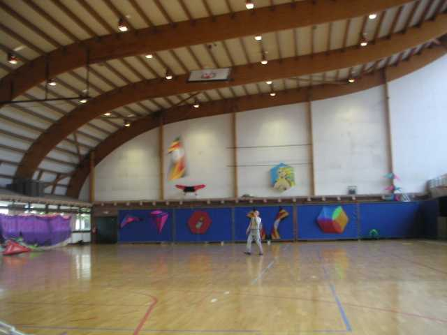
La saison du plein air est terminée, on passe à l'Indoor. Les gymnases ont deux avantages : D'abord la météo y est toujours favorable. Ensuite il y a toujours des toilettes, alors que dans les festivals, c'est souvent très limité ou très loin. Les cervolistes s'en accommodent faute de mieux, mais c'est souvent un frein coté épouses...

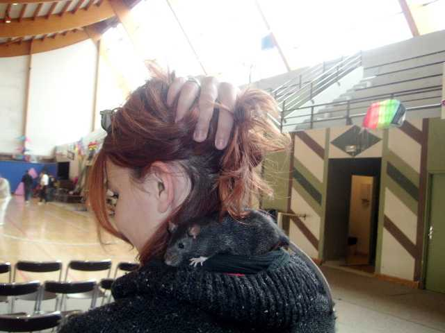
Après ce quart d'heure culturel, entrons. On est accueilli par Audrey, la fille du prés' avec son sourire et son animal favori...

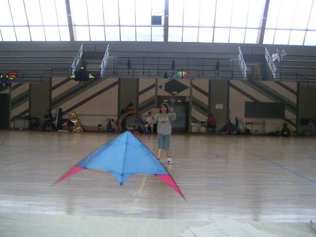
Le matin, les figures imposées (y a toujours une compèt' en indoor). Vous ne verrez pas beaucoup de photos, car ils bougent tout le temps, et avec la lumière limitée, c'est pas terrible. Il y a tous les âges et c'est selon les règles, mais dans un esprit convivial, voire familial.

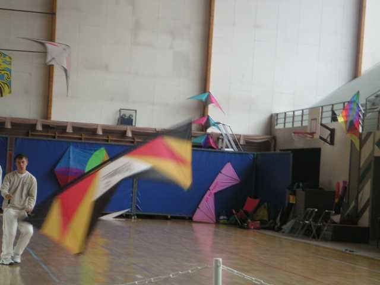
Il y a du 2 lignes, avec des cerfs-volants très légers, et souvent avec des bridages très modifiés. Il y a aussi du 4 lignes, de série sauf une barre plus légère et le bridage évidemment.

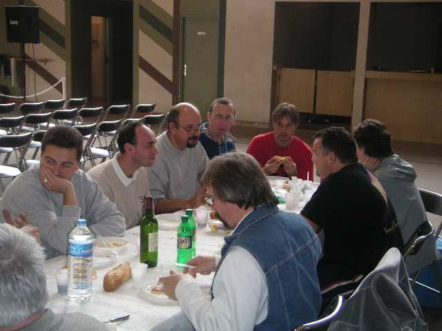
Les imposées terminées (mais si, c'est intéressant, tant qu'il n'y en a pas trop...), un déjeuner est offert à tous les participants (pas le public, quand même, mais il n'a pas trop gêné ce matin...).

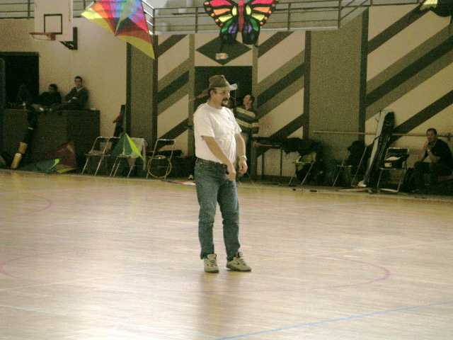
L'après-midi, c'est le tour du ballet en musique... Il y a aussi quelques présentations, moments artistiques ou de fantaisie, avec du pilotable :

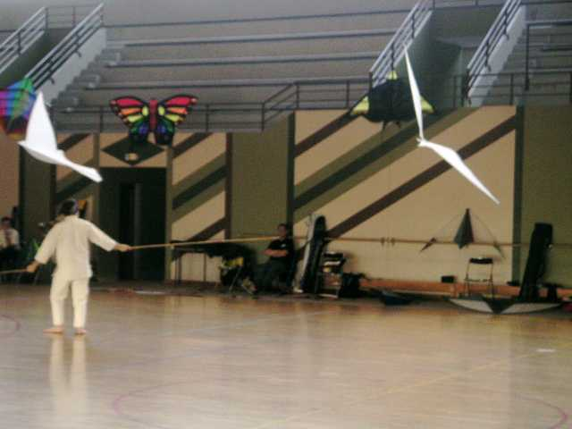
Et aussi du monofil. Ce garçon présente un show très poétique avec 3 oiseaux blancs (2 seulement l'après-midi, je ne sais pas pourquoi) à bout de bras prolongés par des bambous... (le troisième est tenu entre les dents, paraît que c'est pas dur...). Je fais aussi des intermèdes avec le Harfang, la Raie et Bamboo-Bird (pour ce dernier, avant d'avoir marché dessus...).

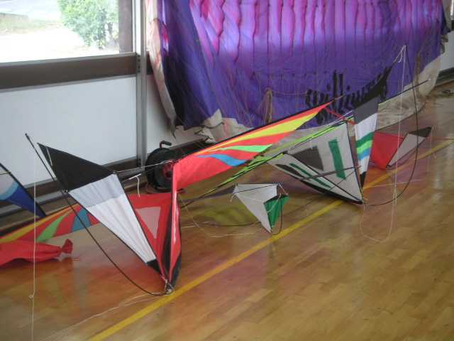
Les Malarts de Louis occupent une grande place. Louis est parti au Maroc, on l'a vu à Dieppe avec la délégation de ce pays. Paraît qu'il va faire un site spécial Malarts.

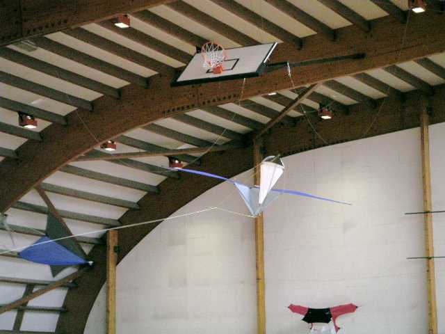
Les Malarts permettent des shows complexes, plusieurs flirtant ensemble au cours d'un vol nuptial. Même que quelquefois (pas ce dimanche), je les ai vus faire des petits (peut-être qu'il faut que Louis soit là ?).

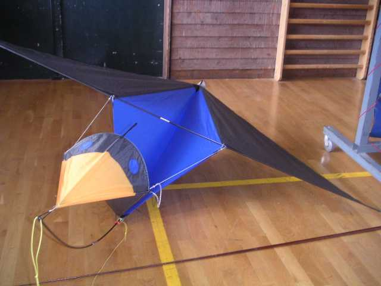
Il y a même de grands adultes !

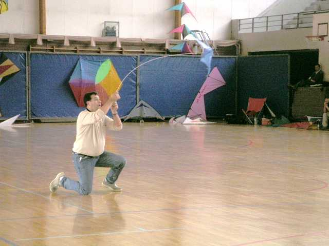
Bruno fait son numéro, d'abord avec son hirondelle monofil au vol poétique, ensuite avec son pilotable, enfin monofil, enfin monofibre pas du tout clownesque, contrairement à ce qu'on pourrait penser (enfin, si, un peu quand même, spectacle oblige...) mais où il fait passer surtout pas mal d'émotion.

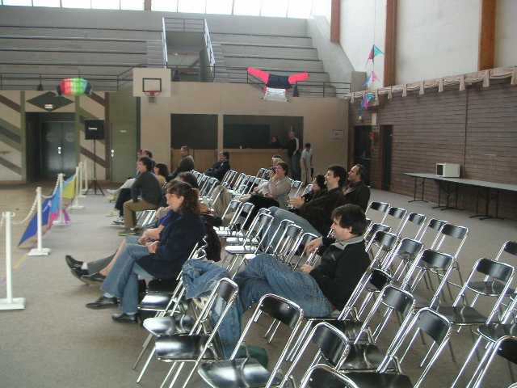
Il y a quand même finalement pas mal de public qui se relaiera tout au long de l'après-midi.

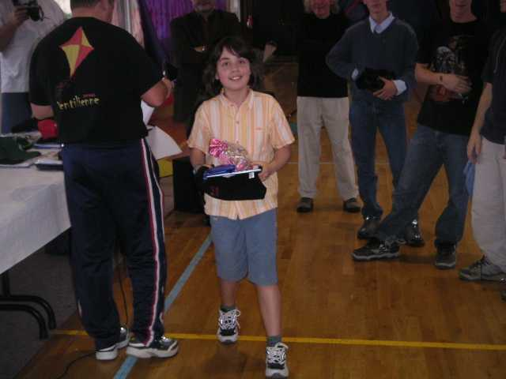
Pour finir, distribution des prix. Finalement, Lucie a fait (un peu) mieux que sa mère !

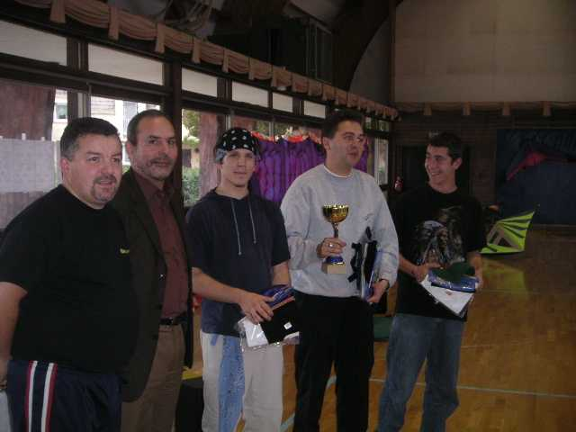
Les mecs sérieux, les experts, reçoivent leur récompense... A gauche Franck qui préside à Cramay'ailes.

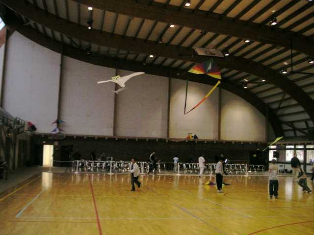
Pour terminer, quartier libre : on fait voler les enfants du coin avec les cerfs-volants indoor, on est drôlement courageux, mais ils ne casseront rien, c'est léger, mais solide.